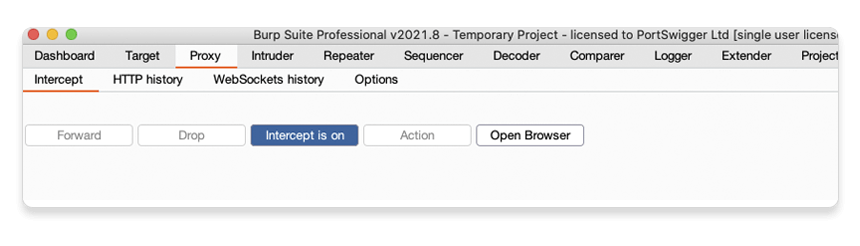
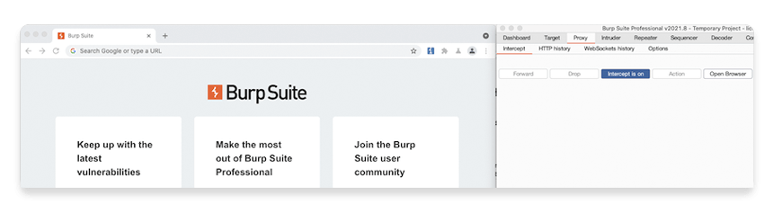
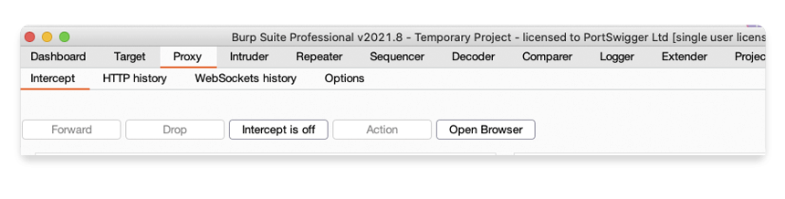
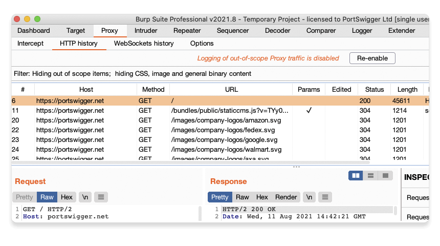

このチュートリアルでは、意図的に脆弱性を作り込んだライブWebサイトを使用して、Burp ProxyでHTTPリクエストをインターセプトする方法を学びます。
リクエストのインターセプト
Burp Proxyは、Burpブラウザと対象サーバ間で送信されるHTTPリクエストとレスポンスをインターセプトできます。これにより、さまざまな操作によるWebサイトの挙動の変化を調査できます。
ステップ1: Burpブラウザを起動する
Proxy > インターセプトタブに移動します。
インターセプト無効ボタンをクリックすると、インターセプト有効に変わります。
ブラウザを開くをクリックします。これにより、Burpブラウザが起動します。これはBurpと連動するようにあらかじめ設定されています。
BurpとBurpブラウザの両方が見えるように、ウィンドウの位置を調整します。
ステップ2: リクエストをインターセプトする
Burpブラウザを使ってhttps://portswigger.netにアクセスしてみて、サイトが読み込まれないことを確認してください。Burp Proxyは、ブラウザが発行したHTTPリクエストを、サーバに到達する前にインターセプトしています。このインターセプトされたリクエストは、Proxy > インターセプトタブで確認できます。

リクエストはここにとどまっており、対象サーバに転送する前に調査や変更ができます。
ステップ3: リクエストを転送する
Burpブラウザにページが表示されるまで、転送ボタンを何度かクリックします。インターセプトされたリクエストとその後に発生したリクエストが送信されます。
ステップ4: インターセプトを無効にする
通常、ブラウザは多くのリクエストを送信するため、すべてのリクエストのインターセプトはしたくないでしょう。インターセプト有効ボタンをクリックすると、インターセプト無効と表示されます。
Burpブラウザに戻り、通常通りにサイトを操作できることを確認します。
ステップ5: HTTP履歴を表示する
Burpで、Proxy > HTTP履歴タブを開きます。インターセプトを無効にしていた場合でも、Burp Proxyを通過したすべてのHTTPトラフィックの履歴をここで確認できます。
履歴のいずれかのアイテムをクリックすると、生のHTTPリクエストと、それに対応するサーバからのレスポンスが表示されます。
これにより、通常通りにWebサイトを探索し、Burpブラウザとサーバ間のやり取りを後から調査できます。多くの場合その方が便利です。
次のステップ - Burp ProxyによるHTTPリクエストの変更
次へこのチュートリアルの内容
- Burp Suiteのダウンロードとインストール。
- Burp ProxyによるHTTPトラフィックのインターセプト。
- Burp Proxyによるリクエストの変更。
- Burp Repeaterによるリクエストの再発行。
- 初めてのスキャン実行。
- 次は？